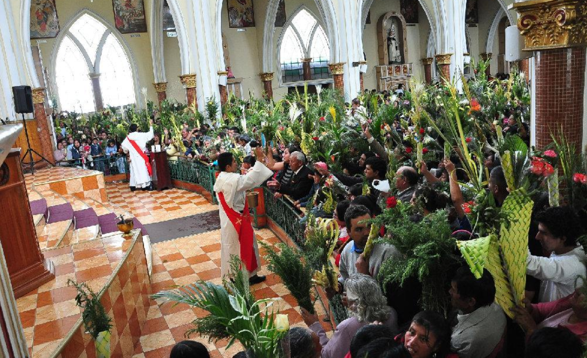
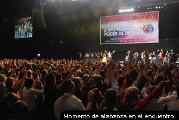
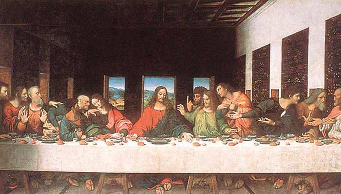
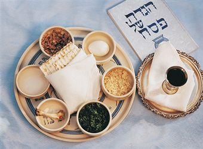
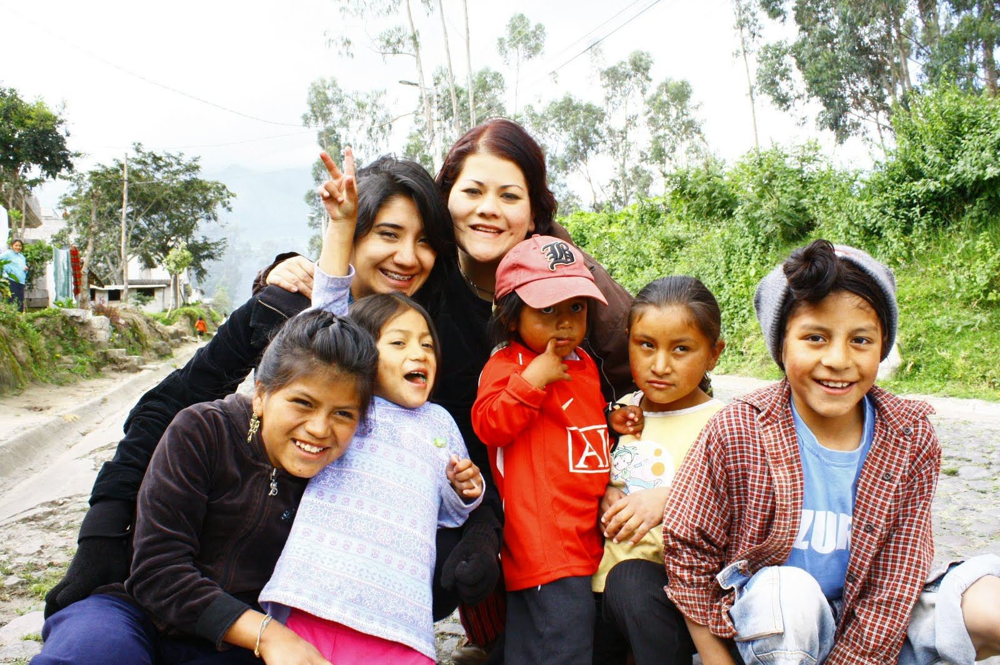

Catolicos:

Tiene lugar después de la Cuaresma, el ciclo de cuarenta días que abarca desde el Miércoles de Ceniza hasta el Jueves Santo. Concretamente, la celebración comienza el domingo de Ramos y finaliza el Sábado Santo, aunque en algunos lugares se adelanta al viernes anterior (el de Dolores) y se prolonga hasta el Domingo de Resurrección.
Cristianos Evangelicos:

Para la iglesia cristiana, la Semana Santa es el tiempo para recordar la muerte de Cristo. Para conmemorarla, se congregan en una jornada de oración y adoración, la cual inicia el Jueves Santo a las 9:00 de la noche y se extiende por 24 horas.
En esta reunión se dan cita grupos artísticos y musicales, ya que los cristianos creen que “Dios habita en medio de la alabanza”. Además, para ellos es fundamental la vigilia, es decir, pasar una noche en vela y adorando a Dios.
Testigos de Jehová:

la comunidad se reúne en el Salón del Reino para recordar esta acción, reflexionar sobre ella y el significado de la muerte y resurrección de Jesús, como rey mas no como Dios todopoderoso.
Judios:

celebran el matza, una cena que consiste en hierbas con sabor amargo y pan sin levadura (ácimo) en forma de galleta. El sabor amargo recuerda la esclavitud que vivió el pueblo de Israel ante los egipcios; y el pan sin levadura, según las escrituras bíblicas, simboliza la humildad de esta comunidad.
Mormones:

La Semana Santa de los mormónes inicia desde el Lunes Santo, y como suelen hacer muy habitualmente durante muchas semanas del año, se reúnen en lo que llaman la “noche del hogar” para recordar pasajes de la Biblia protestante y, sobre todo, de sus libros sagrados. Son momentos de estar en familia, de compartir, y recordar cómo Jesús, que era un hombre según ellos, sólo un hombre, se hizo Dios también